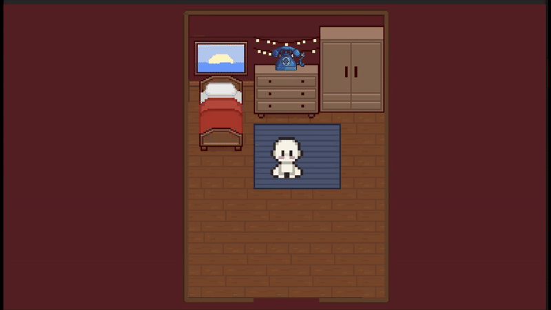
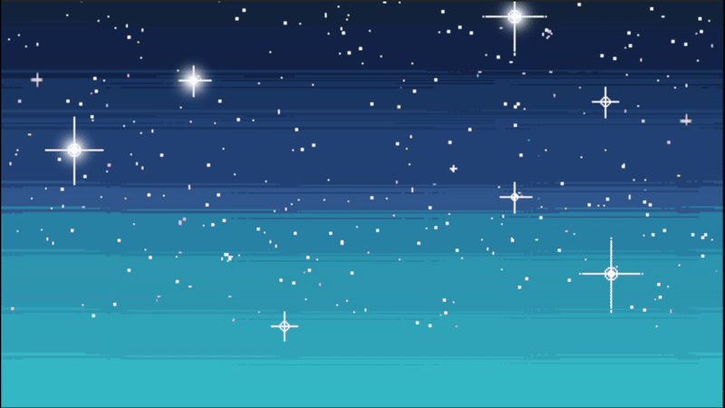

Projects
Web Development Essentials - Coding Project
This was a school project created for my Web Development Essentials module. I built a functional multi-page website using only HTML and CSS, focusing on proper structure, layout, and clean code practices. This project strengthened my fundamentals in semantic HTML, styling, and responsive design.
Live Demo: View Project Online
Introduction to UI/UX - Website Prototype
This assignment was created for my Introduction to UI/UX module. The task was to design a full multi‑page website about any topic of our choice. I chose to create a website based on the anime Re:Zero, focusing on layout, visual hierarchy, and clean UI presentation.
Live Demo: View Prototype Online
Note: Some elements may look misaligned because the platform does not perfectly support the export’s animations and spacing.
Game UI Mockups & Interface Elements
These are UI assets I designed for game interfaces, including menus, HUD layouts, and iconography. These designs were created as part of my Game Asset Creation module, focusing on usability, clarity, and visual consistency.
.png)
Blender 3D Models - School Assignment
This module focused on the fundamentals of 3D modelling, UV mapping, and texturing in Blender. Here are some of the assets I created as part of the coursework.


Game Asset Creation - Playground In The Sky
For my graded game asset creation project, we were given the freedom to choose what ever theme we wanted so I chose a liminal dreamcore playground where it is high up in the sky.
below you will see The assets I have made in blender and a video to showcase my finished project.


Download my game here: Extract all and click in GAC Game exe to play
Below is a showcase of the game:
Tools used: Unity, Blender, itch.io and unity store for game assets
Game Programming - Stargazing Burgers
I developed a 2D top‑down game inspired by gameplay elements from Overcooked for my graded game programming project. The project focuses on player movement, item interaction, task systems, and real‑time decision‑making and a storyline told through visual novel elements.



Game controls: WASD - Move | E - Interact | Shift - Run | 1,2 - Dialogue choice | Enter - Confirm
Download my game here: Extract all and click in cooking game exe to play
Below is a playthrough of the full game (25 minutes long):
Tools Used: Unity, C# and itch.io for game assets
SDP PROJECT - InkFusion App Prototype
Software Development Practises - App Prototype for InkFusion Company
(InkFusion Company Logo)
I Worked in a team to design a mobile app prototype to modernize InkFusion’s business model and expand its reach digitally.
We Identified key challenges through user research, including limited digital presence and learning accessibility.
We Proposed an all-in-one art platform with digital workbooks, community forums, tutorials, gamification, and workshop booking. Focused on a free, community-driven app that supports anime-style artists and boosts user engagement.Link to prototype: Inkfusion App Prototype
Below is a showcase of the prototype app:
LKYTA26 - SmartBP
Lee Kuan Yew Technology Award 2026
(SmartBP Logo)
I worked in a Team to develop SmartBP, a mobile app for blood pressure tracking and health awareness.
We Presented the app’s features and use cases to judges, by Demonstrating how the app helps users track blood pressure and develop health awareness.
Analysed existing BP apps and highlighted SmartBP’s user-focused, simplified design.
Below is a demo of the app smartBP:
Game Development Project - Bubble Blitz
For my graded Game Development project, we were given the theme "Bubbles" to follow so I chose to make a fast-paced arcade game where players must accurately pop bubbles while avoiding hazards to build combos and reach a target score before their health runs out.
Download my game here: Extract all and click exe to play
Below is a showcase of the game:
Tools used: Unity and itch.io for game assets